#boa_ref <- radCor(lsatMeta, metaData, method = "dos")# surface reflectance with DOS
#lsat_rad <- radCor(lsatMeta, metaData = metaData, method = "rad")# Radiance
#hazeDN <- RStoolbox::estimateHaze(lsat, hazeBands = 2:4, darkProp = 0.01, plot = TRUE)
#lsat_sref <- radCor(lsatMeta, metaData = metaData, method = "dos",hazeValues = hazeDN, hazeBands = 2:4)3 Week 3 Corrections
In this week, we learnt how to pre-process remote sensing imagery based on four types of corrections, feathering, and image enhancement. This part is very important because if the pre-processing is not done well, it may affect the subsequent analysis and the accuracy of the final results.
3.1 Summary
Summary part of the learning diary in this week including two sections, one is summary for lecture, the other is summary for practical.
3.1.1 Summary for lecture
Different sensors may have different ways of taking images, some are similar to push broom (Fig.1), such as SPOT and Quickbird, while sensors like Landsat satellites collect data like whisk broom (Fig.1), in which case the scan line corrector (SLC) is important to control and correct the course and direction of the scan line. Since Landsat 7 did not add SLC, there are gaps between the collected data (Fig.2) and it is difficult to fill in the missing data.
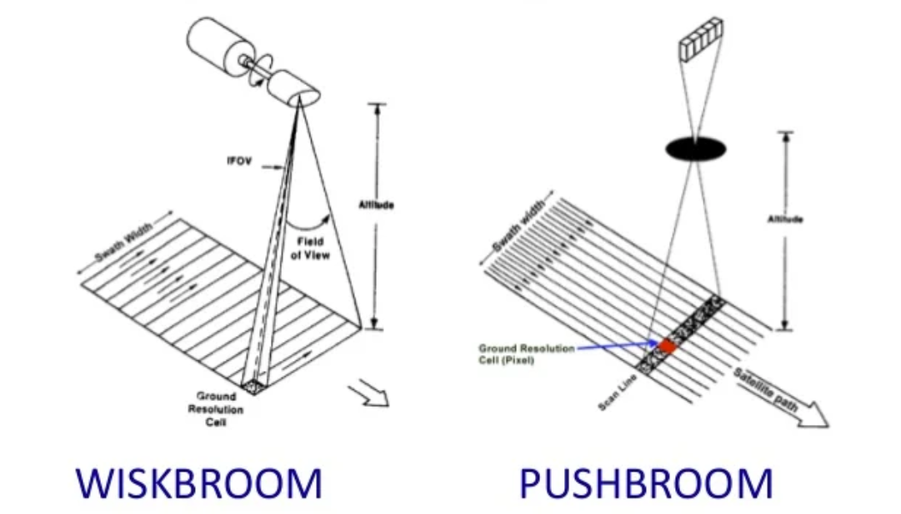
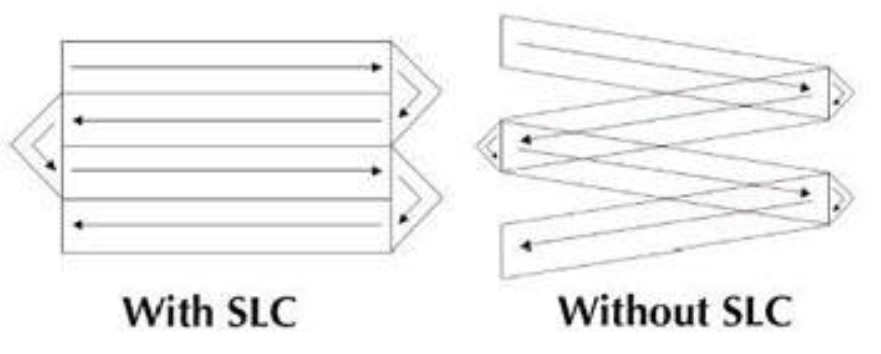
3.1.1.1 Part1: imagery corrections
Depending on the quality of the acquired data and the needs of the user, the collected raw data is usually first corrected, which includes geometric correction, atmospheric correction, topological correction and radiometric calibration.
- Geometric correction
We need to do geometric correction is because the following four conditions may occur during the data collection process to cause image distortions. First is the capture of images due to the difference in view angles may cause the shadow of the objects on the image or the shadow of the aircraft sensors. Secondly, it is influenced by the topography, for example, the mountain is not a flat surface but has to be “printed” on a two-dimensional image. Thirdly, affected by weather, such as winds, heavy rain and other bad weather, sensors such as those carried by airplanes and balloons are unable to collect data stably, which can also cause image distortion. Last but not least, it is also possible that the rotation of the Earth makes the adjacent images misaligned and not perfectly aligned.
The principle of geometric correction is to determine some ground control points (GCP) with coordinates after selecting the target image (uncorrected image) and the reference image (corrected image), which means that we need to collect GPS data as well. In addition, to establish a function (e.g linear, polynomial, projective, etc.) based on the mathematical relationship between the positions of these GCPs in the uncorrected image and corrected image. The complete image is corrected according to this function, and the geometrically corrected image is obtained. Following Figure 3 is an example for comparing the difference between the same image before and after geometric correction.
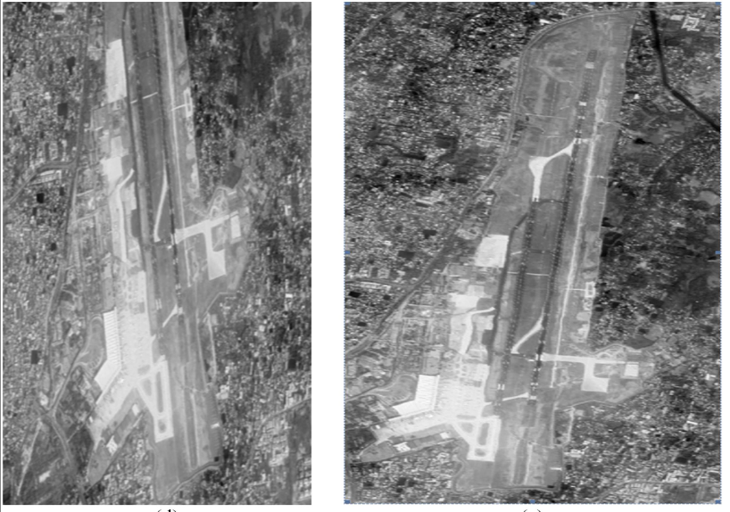
Notice:
- It is also needed to minimize the RMSE value, usually less than 0.5. Add more GCPs might decrease the RMSE.
- The points after rectified may not fall on the grid squares, and even some might fall outside the boundary. To solve this problem, we can do re-sample based on suitable methods to let the pixels in the output grids have normal values.
- Atmospheric correction
According to Jensen (2015), atmospheric scattering and topographic attenuation are the most two important sources of environment attenuation. We perform atmospheric correction to reduce the effect of clouds on the image and reduce the contrast of the image. For example, since clouds are very bright, they would cause an adjacency effect that makes the surrounding pixels brighter than they really are. There are two types of atmospheric correction, one is relative atmospheric correction, the other is absolute atmospheric correction. Absolute atmospheric correction (e.g. FLAASH, empirical line correction) is changing digital brightness values into scaled surface reflectance, which can use atmospheric radiative transfer models, but it would be really hard, since it needs a lot of data and a long-time period to do this.
Dark object subtraction (DOS) and Psuedo-invariant Features (PIFs) are two relative atmospheric correction methods. Dark object subtraction (DOS) is based on the assumption that the reflectance of dark objects in images (e.g., bodies of water, shadows of mountains, etc.) has almost no reflectance in some specific wavelength bands, and therefore the reflectance corresponding to these dark objects in the image should be a fraction of the energy absorbed by the sensor after the solar radiation is directly reflected by the atmosphere (blamannen 2011). Therefore, by subtracting the value corresponding to the darkest object pixel in the image, a higher contrast image that is closer to the real situation is obtained. While PIFs are matching the brightness pixels in the remote sensing images and the spectral reflectance data measured simultaneously using a field spectrometer in the linear relationship, and use linear regression to adjust (predict) the values of other pixels in the image to be corrected.
However, it is not always necessary to do atmospheric correction, such as when classifying a single image, independent classification of multiple date imagery, and other situation (Jensen 2015).
- Topological (orthorectification) correction
The essence of topological correction is to computationally adjust the image looks same as the view at nadir look and remove distortions, which requires sensor geometry and an elevation model. Topological correction can be done by using software like QGIS and SAGA GIS, or R as well.
Notice: Atmospheric correction should be done before topological correction.
- Radiometric calibration
Radiometric calibration is based on the raw data collected from the satellites to change digital numbers (DN) into spectral radiance, which means that change image brightness into the amount of light within a band from a sensor in the field of view (FOV). After the transmission, the spectral radiance is with units and meaning.
Notice
- DNs do not have units.
- Radiance is usually called top of atmosphere radiance.
- Level 2 product refers to the data has been changed or advanced.
3.1.1.2 Part2: data joining and enhancement
Data joining is like merging imagery together. In many cases, we need to join data sets to generate a complete remote sensing image covering the whole study area when the study area is relatively large or located at the junction of multiple images. In the process of joining, the average of the pixel values of the overlapping parts is usually chosen as the pixel value of the joined images. The reason for doing so is to reduce the difference of DN values between the two images.
Image enhancement refers to the enhancement of image contrast because many different materials may have little difference in their ability to reflect the same wavelength of energy, which may cause the range of DNs of the raw image to be concentrated in a smaller range, resulting in a lack of significant contrast and the need for contrast enhancement. Common methods include expand the range of DNs from Minimum to Maximum, percentage linear and standard deviation, and piecewise linear contrast stretch. In addition, there are many other enhancement which can be applied to improve the quality and visual appearance of the imagery, including ratio enhancement, filtering (e.g. edge enhancement), PCA texture enhancement, pan sharpen and data fusion (decision level fusion, object-level fusion, image fusion and satellites data fusion).
Notice: Image stretch only change how the image express by stretching the range of original image in a more suitable range, it does not change the raw image.
3.1.2 Summary for practical
In this week’s practical part, we mainly focus on three parts, including atmosphere correction, imagery merge, and image enhancement. In practical applications, these are important steps for the pre-processing of acquired original remote sensing images, because it is never possible to obtain the most ideal image. The main workflow of practical in this week shows in the following Figure 4. According to the workflow, it shows that our main task is to actually apply these image processing methods, review what we talked about in the lecture and what they should be used for.
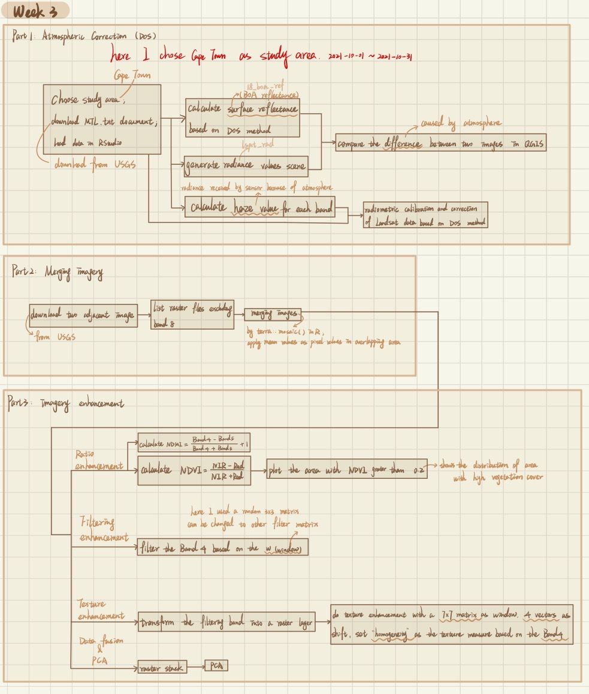
According to Figure 4 above, I divided this practical into 3 parts. The first part is for atmosphere correction, and I focused on one of the atmosphere correction methods called Dark Object Subtraction (DOS) in this week. As mentioned above in the summary of lecture part, DOS is an approach based on the fact that very dark objects do not reflect any energy back to the sensor, so subtract that energy and the image appears unaffected by the atmosphere. Following is the R code that we can use to do DOS in R, and based on the function radCor( ) and relevant parameter settings, we can get the result after DOS in a quick way without manual calculation. In addition to DOS, it is also mentioned to convert the DN value of the image directly into reflectance, that is, the reflectance of the Top of Atmosphere.
In part 2, after I did pre-processing for the imagery that I collected, I merged two images by using mosaic( ) function in the terra package in R. In this case, the method of mean value is adopted to deal with the overlapping parts between two images. In part 3, I tried 5 image enhancement approaches, including ratio enhancement, filtering, texture enhancement, data fusion & PCA. In the part of ratio enhancement, I used Normalised Difference Vegetation Index (NDVI) to enhance the vegetation coverage in the image (Figure 5), while Normalized Difference Moisture Index (NDMI) could enhance the area with high moisture in the image (Figure6). in this case, the results of NDVI and NDMI looks similar.
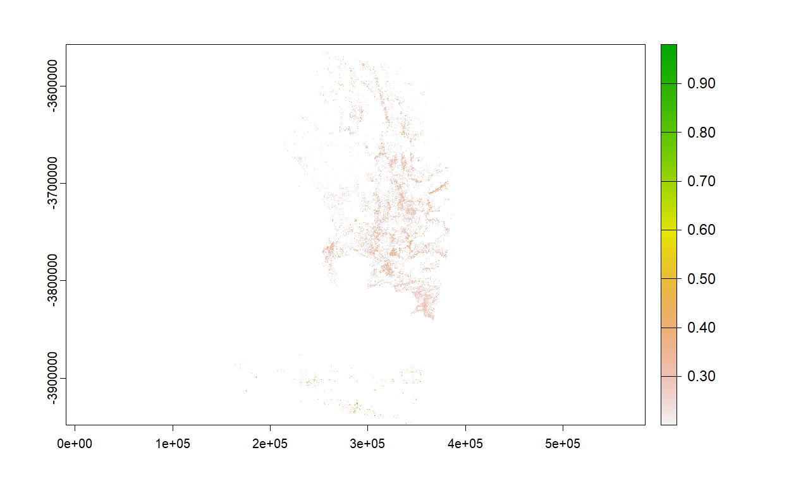
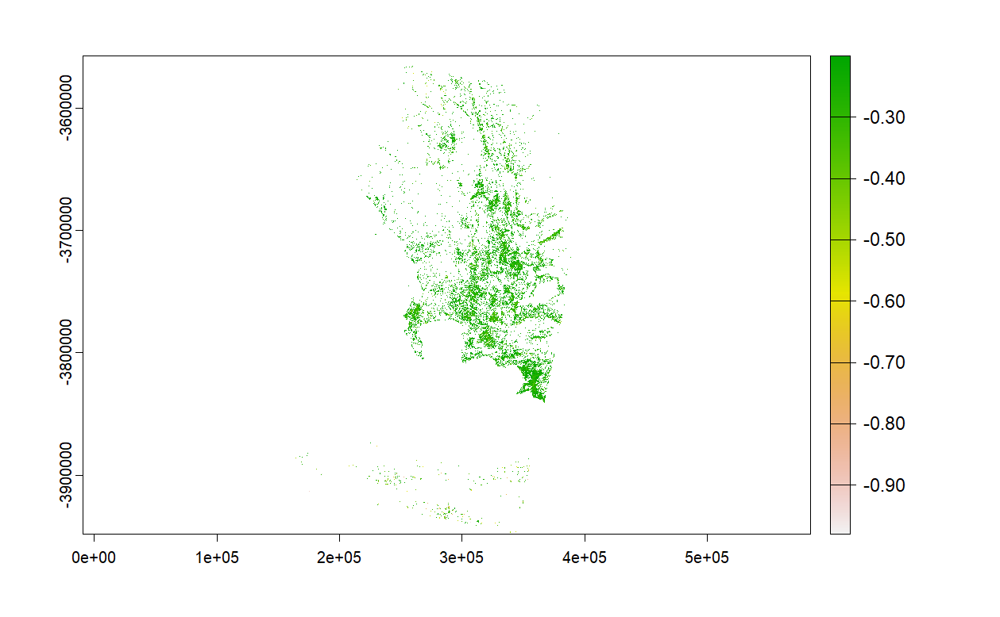
For texture enhancement, I chose Band 4. According to the spectral feature curve of the surface object, the enhanced part should be green vegetation, which can be confirmed by Figure 7 below. This method may be used for image enhancement with higher resolution and large differences in surface objects, which may get more obvious enhancement effect.
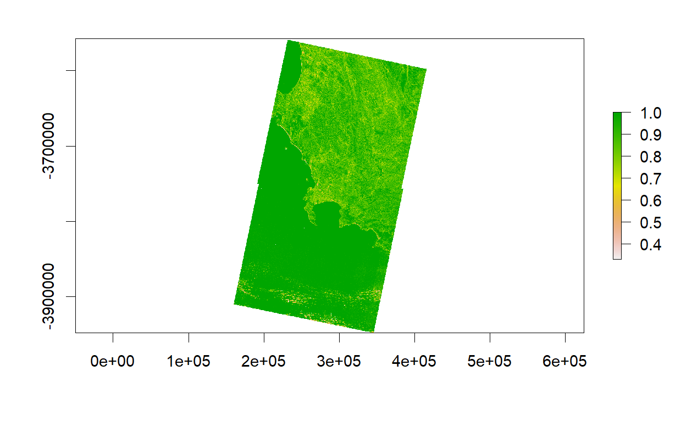
Notice
- Formula of DOS, and the meanings of these indices in the formula.
- Usually, do not use panchromatic band when doing land cover classification.
3.1.3 Questions
- How many GCPs do we need to select when doing geometric correction?
- Why atmospheric correction is not always necessaryly done?
- What is the difference between empirical line correction and PIFs, both of them correct image based on regression model?
- How to convert TOA radiance to TOA reflectance?
- What is the light source when mention TOA reflectance and surface reflectance?
- Is pan sharpen a kind of high pass enhancement? if not, what is the difference between them?
- Why color of pixels outside the overlapping area of the following images also changed after joining?
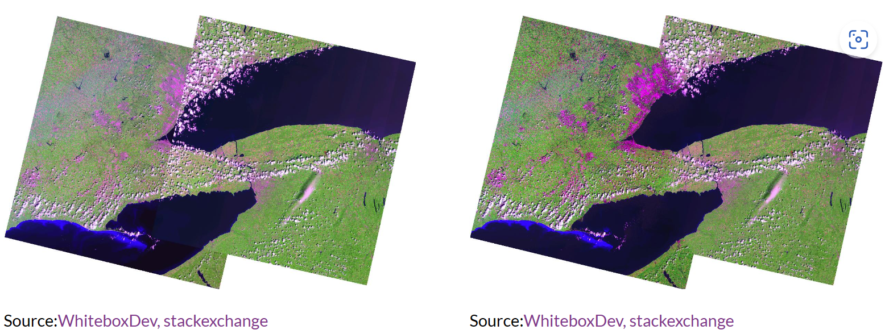
- After doing PCA, how to interpret the results? What is the components refer to?
3.2 Application
In this week’s Application section, I mainly supplemented several cases of atmospheric correction and image enhancement in practical research, so as to help me better understand relevant theoretical knowledge and know more about atmosphere correction and image enhancement.
3.2.1 Application of atmosphere correction
Pereira-Sandoval et al. (2019) decided to find a more appropritiate method for atmospheric correction with inland water bodies based on Sentinel-2 multispectral images and obtain a higher accuracy. Different from the ocean, the surface-leave radiance of inland water and water near the coast to the near infrared band is usually greater than 0, so the DOS method is not much suitable to be used for atmospheric correction of the image (Pereira-Sandoval et al. 2019). After comparing six atmospheric correction processors, Pereira-Sandoval et al. (2019) concluded that in this Case the Polynomial-based algorithm applied to MERIS (Polymer) and Case 2 Regional Coast Color (here called C2RCC) was the best two performers. Although the data they chose is free and open source like Sentinel-2, the resolution of 10 to 20 meters is acceptable for the study of surface objects such as inland water bodies. However, the general applicability of these two methods is not high. Because the research area they choose is mainly for 8 reservoirs and 1 coastal lagoon (Figure 9), the accuracy of results cannot be guaranteed after atmospheric correction, since they may be affected by the water quality and water form of inland water bodies, and the accuracy of these two methods might be changed significantly. The problem might be solved by first classifying the images and then using different atmospheric correction methods (Pereira-Sandoval et al. 2019).
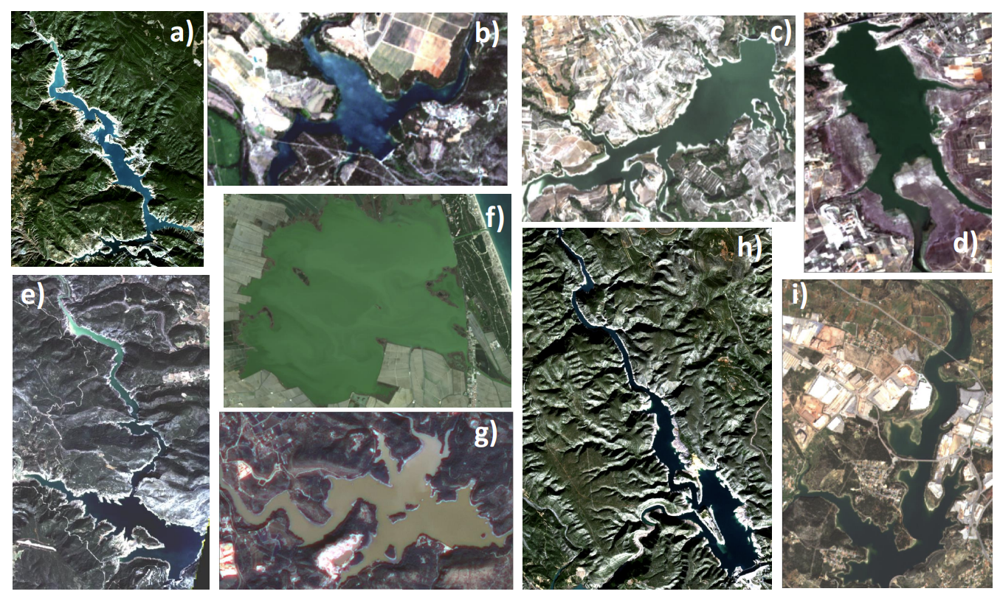
Dark-object subtraction (DOS) is a widely used and constantly improving atmospheric correction method (Zhang, He, and Wang 2010). Ding et al. (2015) proposed a improved DOS method for atmospheric correction, which took into account Rayleigh scattering, Mie scattering and other remote sensing image parameters. The difference between this approach and the basic DOS method is that haze value used in this approach is a final predict value based on the mean DN value in each band and a predicted haze value which considered normalized gain and offset value (Ding et al. 2015). The difference between the improved DOS atmospheric correction method and other DOS can be seen directly from Figure 10 and 11 below. Ding et al. (2015) also combined NDVI and NDWI to try to extract vegetation and water in the image after atmospheric correction, and they found that the improved DOS method was better. However, the selection of the study area is very simple, so it is impossible to judge whether such results can be obtained when this method is used for atmospheric correction of remote sensing images through this study and related results. In addition, it can be seen from the improved DOS image after atmospheric correction that the overall image is reddish, which may affect the subsequent quantitative remote sensing results and analysis, so further optimization may be needed.
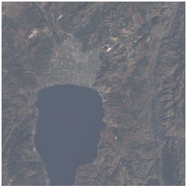
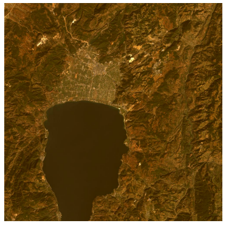
3.2.2 Application of image enhancement
Texture is a very important feature in the process of image interpretation and classification, and texture analysis has been widely used in vegetation related research (Feng, Liu, and Gong 2015; Pradhan et al. 2014). When Lu et al. (2012) classified land use and land cover in the Amazon jungle area of Brazil, they found that due to the mixed distribution of local land use and land cover, the result of direct classification was not ideal. While, textural image enhancement can significantly highlight different land use or land cover types, so they combine textural image and spectral signatures to improve classification accuracy (Lu et al. 2012). In the following Figure 12, A is tuextural image enhancement result based on near infrared band, and B is tuextural image enhancement result based on short wave infrared. The area covered by vegetation can be clearly seen from the figure, and the depth of color can also reflect the density of vegetation cover. This method can indeed help improve the accuracy of image classification. However, in the aspect of data selection, if we want to further improve the accuracy and accuracy of classification, we need to use higher resolution data, especially for the complex environment like the jungle, or the research area is small, or the research object is small.
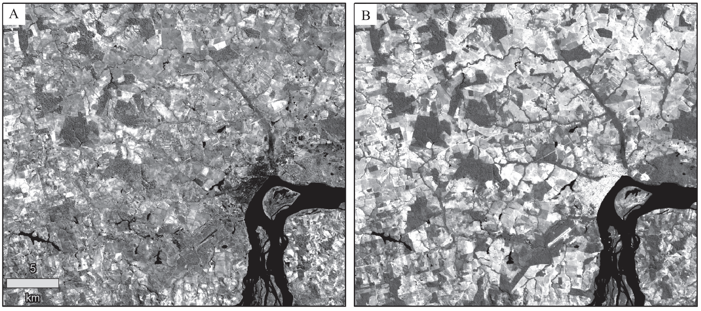
3.3 Reflection
What is interesting?
I think the interesting thing in this week is that the image that the sensor gets can be significantly different from the actual scene, for example, due to the influence of particles in the atmosphere. However, the effect of atmosphere on image quality can be minimized by atmospheric correction. It can also improve the quality of the image through image enhancement, so that users can distinguish the ground objects more clearly. For example, by calculating NDVI, green vegetation with different chlorophyll contents can be roughly mastered, which can be used to monitor crop diseases and insect pests and other practical problems.
What is useful in the future?
Both atmospheric correction and image enhancement should be done after obtaining the original remote sensing image, but there may be differences according to different research purposes. For example, the color contrast of the image after atmospheric correction is more stark than that of the original image. Whether it is supervised classification, unsupervised classification or visual discrimination, it can be clearer and help to get more accurate classification results. And image enhancement also has a wide range of applications, such as the NDMI image can be preliminarily found flood areas.
What is not useful? (can be instead)
In my opinion, neither atmospheric correction nor image enhancement can be instead so far, but the quality of some original satellite data is very high or the research questions studied by some scholars are relatively special, so it may be unnecessary to carry out the image preprocessing of atmospheric correction and image enhancement.